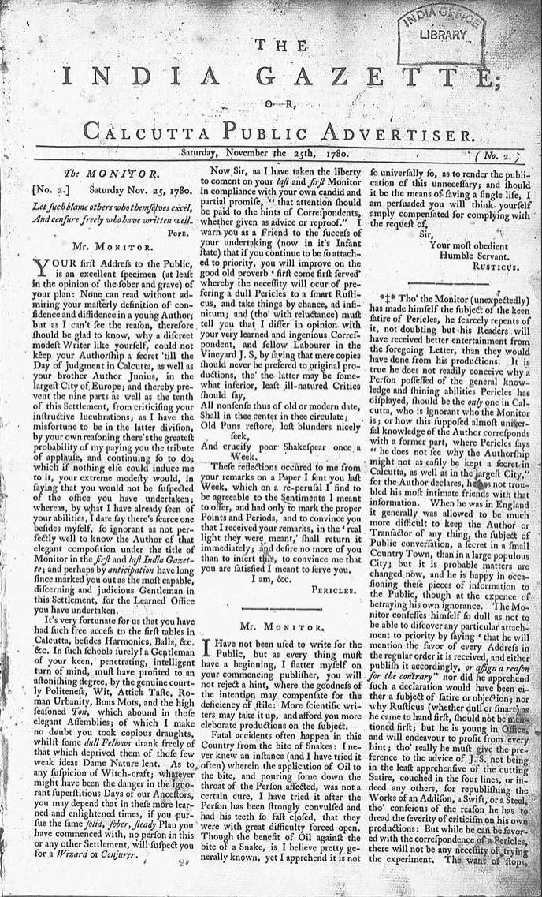
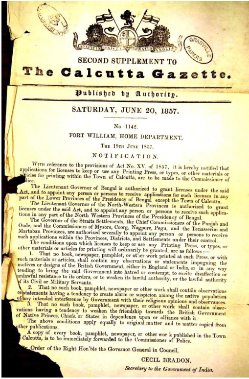

Answering a Rival With a Rival
The previous chapter left Calcutta's newspaper establishment with a problem it had no existing legal tool to solve. Hicky's Bengal Gazette was popular, provocative, and, in the eyes of Governor-General Warren Hastings and his allies, dangerously unaccountable. Banning it from the post office had only fed its founder's sense of grievance and, ironically, its readers' curiosity. What the administration reached for instead, well before it reached for the courts, was competition: a second newspaper, friendlier to the establishment, that could offer Calcutta's English-reading public an alternative source of news and, not incidentally, crowd out some of Hicky's circulation and advertising revenue.
That second paper was the India Gazette, and its arrival on 18 November 1780, barely ten months after Hicky's first issue, tells its own story about how seriously Calcutta's establishment took the threat of an independent press. A colonial government confident that Hicky's paper would simply fade away had no obvious reason to sponsor a rival so quickly. The speed of the India Gazette's launch suggests instead that officials sympathetic to Hastings recognized, almost immediately, that a newspaper was now a permanent feature of Calcutta's public life, and that the real strategic question was not whether newspapers would exist but who would control the terms on which they operated.
This chapter follows that second model through its first, formative years: not a lone printer picking fights with a Governor-General, but a pair of newspapers that built durable institutional relationships with the Company establishment, prospered because of those relationships, and in doing so set a template for what a safe, sustainable Calcutta newspaper looked like for much of the following generation.
Messink, Reed, and the India Gazette

The India Gazette, or Calcutta Public Advertiser, for Saturday 25 November 1780, just a week after its first issue answered Hicky's paper with a more restrained, Company-aligned alternative.
The India Gazette, or Calcutta Public Advertiser, was founded by Bernard Messink and Peter Reed, both of them, unlike Hicky, current or former East India Company men rather than outside printers looking for a market opportunity. That distinction mattered from the outset. Where Hicky had approached printing as a trade to be learned from scratch and a business to be built on subscription and advertising revenue alone, Messink and Reed launched their paper already embedded in the social and professional networks of Company Calcutta, with the connections that implies: access to officials willing to supply notices and announcements, and an audience of fellow Company men predisposed to trust a paper produced by people they already knew.
The India Gazette's editorial character reflected this from its first issue. It was, as the previous chapter noted, widely understood as a strong supporter of Hastings' administration, positioned explicitly as the responsible alternative to Hicky's increasingly personal and accusatory style. Its pages carried government notifications, trade and shipping news, and advertisements, the same basic commercial content that had always been part of Hicky's paper too, but delivered without the running commentary accusing named officials of corruption. Whether this reflected genuine editorial conviction, simple commercial calculation about which approach was more likely to survive, or some mixture of both is difficult to determine at two and a half centuries' remove. What is not in doubt is which approach actually did survive.
The India Gazette's most pointed moment of triumph over its rival came in the spring of 1782, when the Supreme Court's seizure of Hicky's press ended in a public auction of his type and equipment. The India Gazette purchased it. The physical machinery that had printed two years of allegations against Hastings, Impey, and Kiernander passed into the hands of the paper that had positioned itself from its subtitle onward as the more responsible, more original, more sustainable alternative. It is hard to imagine a more literal illustration of one model of journalism absorbing the wreckage of the other.
It is worth pausing on what Messink and Reed's backgrounds as Company men actually meant in practice, beyond simple personal connections. Both had spent time inside the administrative culture this history's second chapter described, a world organized around paperwork, standardized notices, and predictable bureaucratic rhythms. Editing a newspaper along those same lines, prioritizing accurate shipping schedules and faithfully reproduced government notifications over provocative commentary, was not a stretch for men who had spent years producing exactly that kind of material for the Company itself. In a real sense, the India Gazette read the way it did because its founders had learned to write for an audience of officials and merchants long before they ever founded a newspaper, an inherited institutional voice rather than a deliberately calculated commercial strategy.
Francis Gladwin and the Calcutta Gazette

A much later surviving issue, a Second Supplement from Saturday 20 June 1857, more than seventy years after Gladwin founded the paper. It still carries the Published by Authority line his original arrangement with the Governor-General established, here used to print an official notification on printing-press licensing.
The Calcutta Gazette, or Oriental Advertiser, arrived nearly four years later, on 4 March 1784, founded by Francis Gladwin, a Company officer with a serious scholarly reputation as an orientalist and lexicographer working on Persian and Bengali. Gladwin's paper was, from the start, more explicitly tied to government business than the India Gazette had been. It published on Thursdays, an unusual publication day chosen in part to carry official notifications on a predictable weekly schedule that Company departments and the wider public could rely on.
Gladwin's own background is worth pausing on, because it illustrates a pattern that recurs throughout the early Calcutta press: the people best positioned to run a newspaper serving the colonial administration were frequently scholars and officials first, journalists second. Gladwin's orientalist credentials, his work translating and studying Persian and Bengali texts, gave him exactly the kind of standing within Company Calcutta's intellectual and administrative circles that made the Governor-General and Council comfortable granting him something close to a semi-official mandate. The Calcutta Gazette was never, technically, a government publication in the sense of being owned and operated by the Company itself. But the distinction between a privately run paper operating under official sanction and a state organ was, in practice, thinner than it might sound.
Gladwin's scholarly reputation rested substantially on his Persian and Bengali grammars and dictionaries, reference works that Company officials arriving in Bengal relied on to learn the languages of administration and trade. A newspaper editor with that kind of standing brought something the India Gazette's founders, for all their Company connections, could not fully replicate: genuine intellectual authority within Calcutta's small community of scholar-officials, the same milieu that had made Warren Hastings himself such an enthusiastic patron of Orientalist scholarship, as this history's second chapter noted. Gladwin's Calcutta Gazette was, in this sense, as much a product of Hastings-era Calcutta's scholarly culture as it was a straightforward business venture.
That semi-official character shows up clearly in how the paper changed hands. In January 1787, Gladwin transferred control of the Calcutta Gazette to Arthur Muir, Herbert Harington, and Edmond Morris, a transition handled less like the sale of a private business and more like a change of stewardship over a quasi-institutional asset, consistent with the paper's function as a vehicle for public notices that the administration itself relied on.
A Newspaper Under Company Protection
The clearest evidence of how closely the Calcutta Gazette was bound to the colonial administration is financial rather than editorial. The Governor-General and Council had, from the outset, permitted Gladwin to publish his Gazette under their sanction and authority, a formal act of official endorsement that neither Hicky's paper nor, in quite the same explicit terms, the India Gazette ever received. That sanction came with concrete privileges. The government initially allowed the Gazette to charge for the advertisements it carried on official business, then went further, granting the paper free postal circulation, meaning copies could travel through the Company's postal network without the distribution costs that had helped cripple Hicky's paper when his own postal access was cut off in 1780.
Free postage was not a small advantage. Distribution was one of the most expensive and logistically difficult parts of running any newspaper across a colonial territory as spread out as Company Bengal, and a state-subsidized delivery network gave the Calcutta Gazette a structural cost advantage that no independent competitor could easily match. This privilege lasted for roughly three years before the government withdrew it in 1787, the same year Gladwin transferred control of the paper to its new proprietors, though the sources available to this account do not establish a direct causal link between the two events.
Compare this directly to Hicky's experience with the postal system, covered in the previous chapter, and the asymmetry becomes stark. Hicky lost his postal access as a punitive measure, a direct consequence of accusing a Company employee of orchestrating a rival paper against him. Gladwin gained postal access as a reward for exactly the kind of paper the administration wanted more of. The postal system, in other words, functioned as a lever the Company could pull in either direction, extending privileges to cooperative papers and withdrawing them from uncooperative ones, without needing any formal press law to justify either action. This is precisely the kind of soft, informal control this chapter's central argument turns on.
A colonial government that had no legal mechanism to license or censor a newspaper in 1780 had, within a few years, found an equally effective tool: postal access, official advertising revenue, and the simple comfort of being seen as trustworthy by the people who ran the territory.On official patronage as an alternative to censorship
The lesson here runs parallel to, but is distinct from, the story of Wellesley's 1799 Censorship Act covered later in this Part. Before Bengal's colonial government had any formal legal apparatus for controlling what a newspaper printed, it had already discovered that patronage, postal privilege, and official advertising contracts could shape the press just as effectively as a licensing law, by making cooperation profitable rather than making defiance illegal. Both tools, patronage and eventually law, point toward the same underlying fact: a colonial administration in this period had every practical means available to reward the newspapers that served its interests and to make life difficult for the ones that did not.
What Official Actually Meant
It is worth being precise about what official status did and did not mean for these two papers, because it would be a mistake to picture either the India Gazette or the Calcutta Gazette as a government mouthpiece in any modern sense. Neither paper was owned outright by the East India Company. Both remained privately run commercial ventures, dependent like Hicky's paper on subscriptions and advertising to survive financially. What official sanction actually provided was narrower and more specific: a formal channel for government notifications, occasional financial or logistical privileges like free postage, and, less tangibly but perhaps most importantly, the reputational security of being seen by readers and officials alike as a responsible, trustworthy publication rather than a troublemaking one.
That security had real content-shaping effects even without any formal editorial instructions from the Company. A newspaper that depended on official notices, government advertising, and the ongoing goodwill of the administration for its financial health had every incentive to exercise the kind of self-restraint Hicky's paper conspicuously lacked, regardless of whether any official ever explicitly told an editor what not to print. This is a pattern worth holding onto, because it recurs constantly throughout the rest of this history, from the officially patronized periodicals of the nineteenth century through state advertising's influence on the press under Pakistan and, in different form, in independent Bangladesh. Formal press law, when it eventually arrived, was never the only lever available to a government interested in shaping what got printed. Patronage worked just as well, and often required no legislation at all.
Both papers also served a genuinely useful public function that should not be lost in an account focused on their political caution. Shipping schedules, auction notices, court proceedings, and administrative announcements needed somewhere to be published reliably, and the India Gazette and Calcutta Gazette filled that role for Calcutta's merchant and official community for decades. Their caution was not simply cowardice or capture. It reflected a genuine editorial judgment, shared by a wide swath of Calcutta's English-reading public, that a newspaper's core value lay in reliable information delivered on a predictable schedule, not in Hicky's brand of running political warfare against the colonial administration.
There is a useful modern analogy worth drawing here, carefully. A newspaper of official record, the kind that publishes government notices, legal announcements, and procurement notifications as a matter of course, still exists as a recognizable category in many countries today, and such papers are rarely expected to double as investigative or adversarial journalism. The India Gazette and Calcutta Gazette were, in effect, Bengal's first newspapers of official record, performing a real civic function even as they declined to perform the watchdog function Hicky had briefly attempted. Reading them purely as instruments of Company control misses the fact that a functioning colonial administration, like any government, genuinely needed a reliable public channel for exactly this kind of routine notification, and someone had to build it.
Three Kinds of Newspaper
By the time this Part of the history closes, Calcutta's earliest newspapers had sorted into three broad types, each with its own relationship to the colonial establishment: independent papers willing to criticize officials directly, official or semi-official papers operating with Company sanction and privilege, and, from 1800 onward, missionary papers produced by religious institutions operating partly outside ordinary Company oversight, covered in full in the next chapter. The timeline below plots Calcutta's earliest papers against this three-way classification. Filter by type to see how the balance between these three models shifted across the founding decades of Bengal's press.
Calcutta's Earliest Newspapers, by Type
Independent, official, and missionary papers founded between 1780 and 1818. Filter to isolate any one type.
The Business of Being Safe
It is tempting, from a modern vantage point that tends to celebrate press independence, to read this chapter as a story of capitulation, the India Gazette and Calcutta Gazette trading away editorial freedom for financial safety. That framing captures something real, but it understates how genuinely precarious Hicky's alternative had proven to be. Hicky's Bengal Gazette lasted a little over two years before its founder was ruined, imprisoned, and stripped of his press. The India Gazette, by contrast, went on to absorb a series of rival papers over the following half century, the Scotsman in the East in 1825, the Bengal Chronicle in 1827, and eventually, remarkably, its own long-running competitor the Bengal Hurkaru's later incarnation absorbed it in turn in 1834, a detail covered more fully in the next chapter. Longevity and institutional caution, in other words, were not incidental to these papers' success. They were close to the entire business model.
Three Newspapers, Three Revenue Models
The same basic subscription-and-advertising business looked very different once official sanction entered the picture. Click a paper.
Ran entirely on subscription income and advertising revenue, with no institutional backer, no official notices, and no postal subsidy. It was the most financially exposed of the three from the outset, and once the postal ban cut off distribution and the libel suits began, it had no cushion to absorb the damage.
This is not an endorsement of caution as a universal editorial virtue, and later chapters in this history, on Rammohan Roy's reform journalism, on the Vernacular Press Act, on the 1990 newspaper strike, tell a very different story about what independent, adversarial journalism could accomplish when it survived long enough to matter. But it is worth registering, honestly, that the earliest sustained era of Bengali newspaper publishing was built disproportionately by papers that chose safety over confrontation, and that this choice, however unglamorous, kept Calcutta's presses running, its readers informed, and its printing infrastructure intact through decades when a more confrontational model kept collapsing under its own financial and legal fragility.
It is also worth asking what became of Hicky's actual competitors in personal terms, since the institutional story this chapter has told can obscure the individual stakes involved. Messink and Reed, unlike Hicky, never faced imprisonment, seizure of their equipment, or the kind of personal financial ruin that ended Hicky's career. Gladwin went on to a long and respected career as a scholar and translator, his name remembered today primarily for his orientalist scholarship rather than for any newspaper controversy. None of the founders of Calcutta's official press became famous the way Hicky did, and that asymmetry is itself instructive. Hicky is remembered because his confrontation with power was dramatic and, in the end, unsuccessful in the short term. The India Gazette and Calcutta Gazette's founders are comparatively obscure precisely because their approach worked well enough that it never generated the kind of dramatic conflict that makes for a memorable historical story, only the quieter, longer story of institutions that simply kept functioning.
What This Sets Up
By the mid-1780s, barely five years after Hicky's first issue, Calcutta had two clearly established press traditions running in parallel: Hicky's brief, incendiary experiment in independent journalism, already extinguished, and the more cautious, officially sanctioned model represented by the India Gazette and Calcutta Gazette. Neither tradition, on its own, fully anticipated what would come next. A third path was about to open, one that owed nothing to Company patronage and little to Hicky's confrontational style: a press built not around commercial advertising or official sanction, but around religious mission, operating from a small Danish settlement a short distance up the Hooghly from Calcutta, with resources, institutional durability, and a completely different set of motivations from anything examined so far in this history.
The next chapter follows that third tradition, tracing how the Bengal Hurkaru continued and extended the commercial, independent model that Hicky had pioneered, while the Serampore Mission, arriving in Bengal in 1800, built an entirely different kind of press infrastructure, one durable enough to eventually produce Samachar Darpan, the first Bengali-language newspaper, and to publish more books, in more languages, than any press in Bengal had managed before it.
Taken together, the first five chapters of this history have now traced three distinct forces shaping what Calcutta's earliest newspapers actually looked like: the administrative and commercial infrastructure that made a press possible at all, the personal, confrontational model Hicky pioneered and paid for, and the official, patronage-backed model this chapter has examined in detail. Each force pulled in a different direction, and each left a lasting mark on how Bengali journalism would develop over the following century and a half, a mark this history keeps returning to as it moves from Calcutta's earliest presses toward the vernacular, reform-minded, and eventually nationalist newspapers that later Parts of this account cover in full.